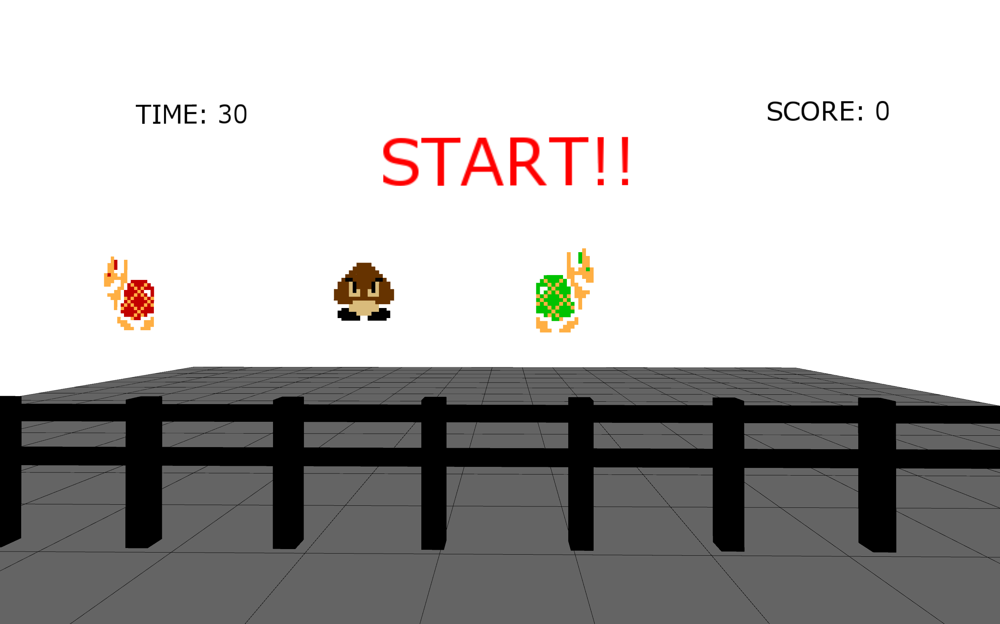
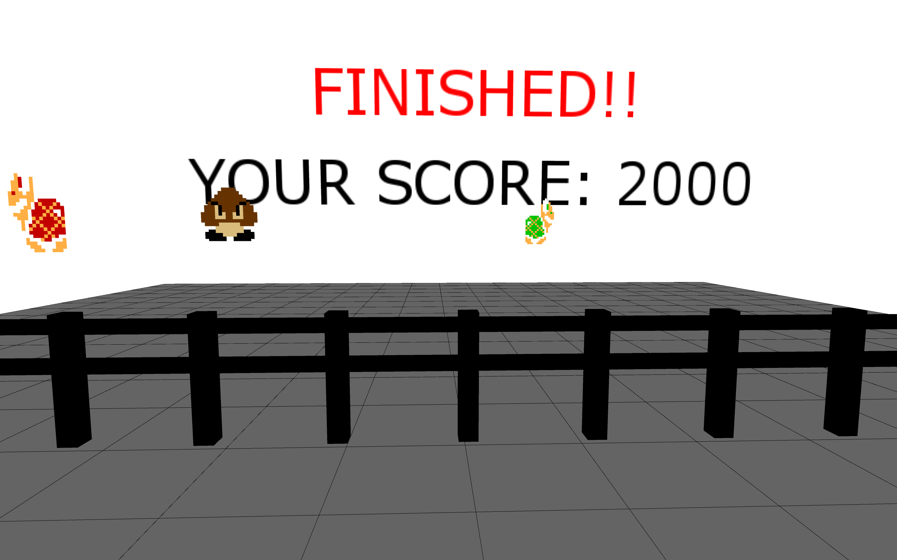

マリオの敵キャラクターを使った3Dシューティングゲーム
processing
2024/08/05
マリオで出てくる敵キャラクターを3D上にて弾を発射させ当てるシューティングゲームを作成した。視点はwasdキーで操作でき、制限時間は30秒である。
このゲームは敵に弾を当てより高い得点を目指すゲームである。敵キャラクターとして選んだのは、クリボー、緑ノコノコ、赤ノコノコである。
また発射する弾も2種類用意し、キーボード操作で変更できるようにした。そして戦略性を持たせるため、当てる球とキャラクターによって得られる得点を変更した。

